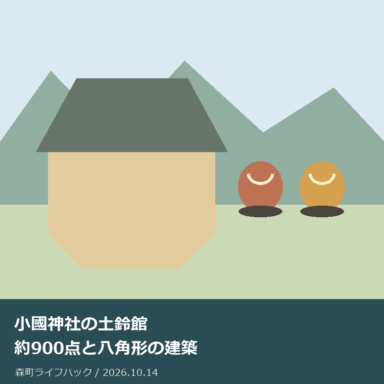

社寺・文化・建築
小國神社の土鈴館｜約900点と八角形の建築

Q. 土鈴館は何が見られる？秋に訪ねる前に何を確認する？
A. 小國神社の土鈴館は、2025年8月24日に開館した木造平屋・八角形の展示施設です。開館告知では所蔵13,300余点から約900点を展示し、9時〜16時、入館無料と案内しています。休館日は告知時点で未定です。秋の見学は最新の開館・休館状況を神社へ確認してから予定を組んでください。
土鈴を集めた人と展示する人を知る
小國神社の土鈴館は、約900点の土鈴を見られる施設として公式に紹介されています。品物の数だけでなく、収集した人、神社へ託した経緯、展示する建物まで合わせて知ると、見学の視点が増えます。長く集められた物を残し、公開へつなげた人の仕事に、まず目を向けたいと思います。
文化を残してきた人にとって、集めることも、受け取ることも、公開を続けることも別の負担です。私は、入館無料という案内だけで、維持に費用がかからない施設のように紹介したくありません。森町の外から訪ねる側は、公開条件を先に確かめ、自分が見る範囲を決めるところから関われます。
大石浩之（磐田市／不動産業）です。この記事は私の土鈴館訪問記ではありません。2026年10月14日に小國神社の開館告知を確認し、展示と建物の特徴を整理しました。家や土地に関わる者として、受け継ぐ物と、それを置く建物の両方を見るという意見を、公式の事実と分けて書きます。
事実整理｜2025年開館と2026年の見学を分ける
小國神社の「鈴木正彦記念―土鈴館開館のご案内」は、2025年8月16日の告知です。開館日は2025年8月24日と掲載されています。2026年10月14日に読めるページですが、2026年の新規開館ではありません。ページを読んだ日と、施設が開いた日を分けることが、見学の準備の出発点です。
小國神社の告知本文は、神社所蔵の13,300余点から厳選した約900点を展示すると説明しています。約900点は展示の説明、13,300余点は所蔵の説明です。全所蔵品が一度に並ぶ施設ではありません。見学では、展示されている物から特徴を知るのであって、収蔵品すべてを確認できるとは考えないようにします。
展示する土鈴には、北海道から沖縄までの各地のものと、海外制作のものも含まれると説明されています。森町の施設でありながら、森町だけの土鈴を集めた展示ではない点が意外です。地域ごとの違いや共通する題材を探す見方ができます。ただし特定作品が訪問日に展示されるかは、この記事では保証できません。
鈴木正彦は民俗学・国文学の研究者として、小國神社の告知に紹介されています。個人で15,000点以上を収集し、一部を和洋女子大学の文化資料館へ寄贈、残りの大部分を小國神社へ奉納したと記されています。一人の収集が複数の場所へ受け継がれた経緯を知ると、展示の前にある仕事が見えてきます。
15,000点以上という個人の収集数と、神社の13,300余点という所蔵数は、同じ数字ではありません。寄贈と奉納の経緯があるからといって、差を計算して全品の移動先を説明することはできません。対象と時点が異なる数値を、単純な引算で照合しないことです。資料に書かれた範囲で経緯を読みます。
開館告知に掲載された時間は9時から16時、入館料は無料です。休館日は告知時点で未定とされています。これは2026年の毎日の開館を保証する表記ではありません。秋に行く予定を立てるなら、告知の条件を基礎情報として持ち、最新の休館状況や臨時の変更を別に確認してください。
社殿の歴史から建築を見る方法は、森町の神社建築でも扱いました。今回の対象と混同せず、関心の近い部分を読み合わせられます。
建物を見る｜八角形と中央の展示空間
小國神社の土鈴館は木造平屋建てで、八角形の建物と公式に説明されています。告知は中央の展示スペースと、その周囲を巡る配置も紹介しています。展示品だけを目標にせず、外形と内部の見方を合わせると、なぜその配置で土鈴を見せるのかという建築の問いも持って訪ねられます。
八角形に込めた意味については、小國神社の告知が八方位や魔除けとの関わりを説明しています。この記事はその説明を紹介する立場です。八角形の建物一般に同じ意味があるとは広げません。形の意味を知るときも、設計者の意図を独自に推測するのではなく、施設側の説明を起点にするのが確実です。
私は、外観を見た後で中央の展示と周囲の配置を意識すると、建物と展示の関係を理解しやすいと考えます。これは見学方法の提案であり、私が館内を歩いた記録ではありません。入館できたら、見えた配置を公式説明と照合する。分からない部分は不明のまま残す。その程度で十分な観察になります。
木造平屋という説明から、段差がない、車椅子でどの場所も通れるといった利用条件は導けません。入口や展示の見やすさ、休憩の場所などは、必要なご家族が別に確認する事項です。建物の構造と利用上の支援は分けます。移動に配慮が要る場合は、希望する見学内容を添えて神社へ相談してください。
森町公式の「森町の神社建築」は、地域の社殿を歴史的な建築として紹介しています。土鈴館の設計図や現況を説明するページではありません。町の建築史を読む補助資料として使い、土鈴館が文化財指定を受けていると推測しないでください。見学施設と社殿の歴史は、同じ境内でも別々に確かめる話です。
展示を見る｜題材を一つ選んで比べる
土鈴館の公式説明には、干支、祭事や風俗、神話や伝説の神々や動物など、多様な題材が挙げられています。約900点をすべて同じ濃さで見る必要はありません。私は、一つの題材を選び、形や絵付けの違いを比べる方法を提案します。数を消化する見学より、家族で話せる具体物が一つ残ります。
干支の動物を選ぶなら、丸い形か細長い形か、耳や目がどう表されているかを観察できます。産地や作り手の表記があれば、見えた内容だけをメモします。形だけで産地を断定する必要はありません。似た作品でも、同じ作者、同じ年代と判断できるかは別の問題です。表示と印象を分ける練習になります。
鈴の名前から、実際に鳴らして比べたくなるかもしれません。しかし展示品に触れてよい条件は告知では確認していません。見学する側は、館内の指示に従い、触れることや音を試すことを前提にしないでください。撮影の可否も同様です。見たい方法がある場合は、先に認められる範囲を確認します。
文字を読むのが難しい子どもや、長く立つことが負担になるご家族とは、最初に見る対象を一つだけ選べます。途中で切り上げることを失敗にしない方法です。見学の成果を点数で測らず、気に入った形や気付いた違いを一つ共有する。私は、その方が次の関心へつながりやすいと考えます。
関連する材料として、工芸品・書跡・古文書の資料索引の記事があります。調べる対象と、資料が答えられる範囲を分けると、家族の記録にも根拠を残せます。
良い点｜個人の収集が公開へつながった
土鈴館の良い点は、個人の長い収集を、他の人が見られる場所へつないだ経緯が説明されていることです。展示の数だけなら大きさの話で終わります。鈴木正彦の収集と奉納を知れば、誰かが選び、保管してきた物として見られます。私は、物を残す人の働きが紹介されている点を評価します。
約900点を厳選したとの説明は、公開に選択の仕事があることも示します。所蔵の全体と展示の一部が分かれていれば、見学者は見えた物だけから全所蔵を評価しなくて済みます。私は、収蔵品の管理と、来館者に見せる構成の違いが伝わることを、資料を受け継ぐ施設の利点として捉えます。
建物の形と展示の配置を公式に紹介している点も助かります。見学前に外形と中央の展示空間を知れば、作品以外にも目を向けられます。建築に関心のある人と、土鈴に関心のある家族が一緒に訪ねる理由を持てます。展示の好みが違っても、同じ場所を別の視点で見られるのは公開施設の強みです。
入館無料という開館告知は、費用の入口を明確にしています。私は、その良さを認めたうえで、交通費と移動時間は家族側に残ると考えます。施設の料金と訪問全体の負担を分けておけば、近隣の家族も町外の家族も、自分の実行できる範囲で計画できます。無料の文字だけで予定を急がない姿勢が使えます。
注文したい点｜休館未定を毎日開館と読まない
土鈴館の休館日は、2025年8月の開館告知では未定です。2026年10月14日に本文が読めることと、訪問日に開くことは同じではありません。告知が残っているために現在の予定と思い込みやすい部分です。私は、来館者が最新の開館状況へ戻れる入口が明確だと、神社側の説明の負担も減ると考えます。
文化庁は毎年11月1日から7日までを文化財保護強調週間と案内しています。歴史的建造物や美術工芸品の公開などに親しむ機会です。ただし土鈴館独自の週間行事、特別公開、臨時開館は確認していません。週間があるから、この施設で特別な催しがあるとは書けません。秋に調べるきっかけとして位置付けます。
土鈴館の見学に必要な所要時間は、告知から確定できません。展示数を割って一作品に何分という予定を作るのも、家族ごとの見方を無視します。私は、移動の予定に余裕を持ち、見たい対象を絞る方が実用的だと考えます。急いで全点を見る必要はなく、体調に応じて見学を短くする余地も残せます。
私には、収集の全体像を詳しく伝えるべきか、見学の実用情報を前に置くべきか迷いがあります。作品の多様さは魅力ですが、開館を確認せずに家族を連れて行く案内にはできません。この記事では、展示の意味を知ることと最新条件を確認することを同じ比重で扱います。文化への関心と移動の現実を切り離したくないからです。
対案・結論｜訪問日と必要な配慮を確認する
小國神社の土鈴館を秋に訪ねたい場合、今日できることは、希望する訪問日の開館・休館状況を神社へ確認することです。小國神社の公式電話は0538-89-7302、所在地は静岡県周智郡森町一宮3956-1です。開館告知を読んだ日と訪問予定日を分け、土鈴館についての問い合わせだと伝えます。
問い合わせでは、2025年の告知に9時〜16時とあるが、訪問予定日に変更がないかを聞きます。移動に配慮が必要なら、入口や見学可能な範囲についても希望を添えます。聞くことを家族で先に決めると、同じ施設へ何度も別々の問い合わせをせずに済みます。撮影や接触は館内の案内を確認する前提です。
見学の目的を一行にします。「八角形の建物を見たい」「動物の土鈴を比べたい」「収集の経緯を知りたい」といった具体的な内容です。公式に展示されると確定していない個別作品を目当てにする場合は、展示の有無も確認事項にします。目的が絞れれば、すべての作品を見られなくても訪問の意味が残ります。
神社への参拝と土鈴館の見学を一緒に予定する場合も、それぞれの目的を分けます。参拝できる状況から、土鈴館も必ず開いているとは判断しません。移動を担当する家族には、見学の確認結果を同じメモで渡します。予定が変わった場合に、何を確かめ直せばよいか分かる状態を作るのが家庭側の準備です。
家族に残す記録｜収集品と施設案内を二列にする
土鈴館の記録は、作品への関心と訪問条件を分けて残せます。作品欄には、題材、表示にあった産地や作者、気付いた形を記します。施設欄には、訪問日、確認日、開館状況、確認先を置きます。後から読む家族が作品の感想を施設の現行案内と取り違えないため、記録の用途を分ける方法です。
実家に土鈴や小さな収集品がある場合も、施設へ持ち込めば見てもらえるとは考えないでください。土鈴館が個人の品物の鑑定や寄贈を常時受け付けるという情報は確認していません。家族の物は、箱やラベル、受け取った経緯をまず記録します。値段や受入先を推測して処分・運搬を決めない方が安全です。
森町立歴史民俗資料館の公式案内は、農耕具、生活用品、古文書などの展示を紹介しています。土鈴館と同じ展示ではありませんが、生活の道具から町の歴史を見る別の入口です。二施設の開館時間や休館日を混ぜないでください。見たい物に応じて一つを選び、もう一つは別の日の候補として残す使い方もできます。
建物の記録を残す場合、八角形や木造平屋という公式説明と、自分が見た外観を区別します。寸法、年代、構造の細部は目視だけで断定しません。家の調査でも外から見えた印象と確認済みの図面は別です。文化施設の見学でも、分かった範囲を正確に残す方が、次に読む家族の問いを育てます。
調べる対象を広げる場合は、寺院建物の年代記録も参考になります。資料が扱う年代や範囲を読み、この記事の未確認事項を推測で埋めないよう、それぞれの公式出典へ戻って確かめてください。
大石の視点｜物を残すには置く場所が要る
私は、収集品は数だけで残せないと考えます。保管する場所、状態を確かめる人、公開する段取りがあって初めて次の人へ渡ります。これは私の意見であり、土鈴館の管理を担当した体験ではありません。鈴木正彦の収集が神社へ奉納され、建物で公開された公式の経緯から、受け継ぐ仕事の厚みを感じます。
私は、無料の展示にも支える仕事があると言い切ります。具体的な維持費や職員数を確認していないので、金額や人数は挙げません。それでも訪問条件を確かめ、触れてよい範囲を守り、家族の予定を整理することはできます。担い手の負担に配慮する最初の行動を、大きな寄与や改革の話にする必要はありません。
森町の建物や文化に可能性を感じるのは、既に残された物を、別の関心から見直せるからです。ただ、訪ねる人が増えれば自動的に維持が続くと私は思いません。保管と公開を支える人の仕事が見え、来館者の行動が案内の範囲に収まることも要ります。今日の小さな確認は、その条件を整える一つの方法です。
土鈴館を知る今日の成果は、約900点という展示と八角形の建物を区別して理解し、最新の休館状況を確かめる先を持つことです。見学へ行くかは、その後に決められます。秋の関心を急いで予定へ変えず、公式告知の時点と現在の条件を分けて読む。家族の時間と文化を支える仕事の両方を大切にする見方です。
よくある質問
土鈴館は2026年に開館したのですか？
小國神社の開館告知は2025年8月16日付で、開館日は2025年8月24日です。2026年の新規開館ではありません。2026年10月14日に本文を確認しましたが、告知を読めることだけで訪問日の開館を保証できません。9時〜16時、入館無料という掲載条件と、現在の休館状況を分けて確認してください。
13,300余点の土鈴を全部見られますか？
小國神社の公式説明は、所蔵13,300余点から厳選した約900点を土鈴館で展示するとしています。所蔵数と展示数は異なります。北海道から沖縄までの土鈴や海外制作のものも含む説明がありますが、特定作品が訪問日に並ぶかは未確認です。目的の作品がある場合は、展示の有無を神社へ確かめてください。
11月の文化財保護強調週間に特別公開がありますか？
文化庁は毎年11月1〜7日を文化財保護強調週間と案内しています。ただし2026年10月14日の確認では、土鈴館独自の特別公開や週間行事は確認できませんでした。2025年の開館告知では休館日も未定です。週間の名称だけで臨時開館を期待せず、希望する訪問日の開館状況を神社へ確認してください。
公式情報源
2026年10月確認（確認日：2026年10月14日）。制度・数値・公開条件は変わる場合があります。個別の利用は各担当先へ、建築・税務・登記・相続等の判断は専門家へ確認してください。
- 小國神社：鈴木正彦記念・土鈴館開館のご案内（2026年10月14日確認）
- 森町：森町の神社建築（2026年10月14日確認）
- 森町：森町立歴史民俗資料館（2026年10月14日確認）
- 文化庁：文化財保護強調週間（2026年10月14日確認）